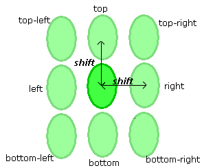

AreaOverlayCheck
-layer1 layer1_name -layer2 layer2_name
-subwindow expr_number
-overlayError shift
-minOverlapArea min_area_size
-overlapAreaType {Average | MinArea | MaxArea}
[-security {no | yes}]
[-markerLayer layer_name]
[-referenceLayer1 “%drawn” | “%retarget” | layer_name]
[-referenceLayer2 “%drawn” | “%retarget” | layer_name]
[-anchorLayer1 “%reference” | “%drawn” | “%retarget” | layer_name]
[-anchorLayer2 “%reference” | “%drawn” | “%retarget” | layer_name]
[-layer1ContourCondition contour_condition1]
[-layer2ContourCondition contour_condition2]
[-checkName cName]
[-comment comment_text]
[-classify handle]
[-appendMarker extra_markers_layer]
[-contour1Handle contour1_handle -contour2Handle contour2_handle]
-database db_name | -layerOut return_layer_name
| -database db_name -layerOut return_layer_name
AreaOverlayCheck
-layer1 layer1_name -layer2 layer2_name
-pdkCheckName check_template
-database db_name
[additional_options]
Compares the area inside the inner edge of a PV-band of one layer with the area inside the inner edge of a PV-band of a second layer. This information is then used to calculate the size of the overlay that can be expected, given that the two layers can be slightly misaligned.
AreaOverlayCheck identifies potential problems with connectivity. It assumes that the two layers under investigation are likely to be misaligned with respect to one another, and simulates the possible misalignment as part of its computation. An error is flagged if this predicted overlay is less than the ‑minOverlapArea.
This check is typically used to predict the overlay of a contact or via layer (-layer2) over a poly, active or metal layer (-layer1). The check simulates misalignment by shifting the -layer2 PV‑band by the ‑overlayError amount. It evaluates eight different shifts, one in each of the following directions: top, bottom, left, right, top-left, top-right, bottom-left and bottom-right.
If used with a PDK, this function calls an AreaOverlayCheck defined in the PDK and runs it for the specified layers, writing check results to the specified database.
The check identifies nine separate overlap areas in all, one for the original position and one for each of the eight shifted positions. It then calculates the specified type of overlap value:
Average — The average of the nine individual overlap areas.
MinArea — The smallest of the nine individual overlap areas.
MaxArea — The largest of the nine individual overlap areas.
The check outputs a property called AverageArea if the overlap type is average, outputs a property called MinArea if the overlap type is the smallest, or outputs a property called MaxArea if the overlap type is the largest.
Flagged errors are identified by error markers located at the intersection of -layer1 and -layer2.
Required keyword and argument defining the name of the first layer you are checking using AreaOverlayCheck. This is the first layer for which PV-bands are generated and is typically a poly, active or metal layer.
Required keyword and argument defining the name of the second layer you are checking using AreaOverlayCheck. This is the second layer for which PV-bands are generated, and is typically a contact or via layer.
Required keyword and argument defining the process variation experiment to which this check applies. You must reference individual process variation experiments by their positions in the -opticalSpanList and -doseSpanList arguments to the PVband command used to generate the PV-band data being checked. Thus, expr_number refers to an index to a list of experiments.
The check uses the contours defined by the inner PV-bands of this subwindow for identifying problem spots.
Setting expr_number to a value of “expr_number_shift” causes the check to operate on a certain shift for a double-patterned PV-band with overlay (for example, -subwindow 1_N causes the check to only run on the north shift).
Required keyword and argument defining the shift distance, expressed as a real number. The shift distance represents the maximum distance by which you expect -layer2 to be misaligned with respect to -layer1.
The check simulates misalignment by shifting polygons formed inside the inner edge of a ‑layer2 PV‑band by the specified distance in eight directions: top, bottom, left, right, top-left, top-right, bottom-left and bottom-right.

Required keyword and argument defining the minimum acceptable overlap, expressed as a real number. Any overlap smaller than the min_area_size is flagged as an error.
Optional keyword and argument used to define how the check calculates the overlap value based on the nine separate overlay configurations shown below.
The overlap type must be one of:
Average — The average of the nine individual overlap areas.
MinArea — The smallest of the nine individual overlap areas.
MaxArea — The largest of the nine individual overlap areas.
The check outputs a property called AverageArea if the overlap type is average, outputs a property called MinArea if the overlap type is the smallest, or outputs a property called MaxArea if the overlap type is the largest.
Optional argument defining security privileges. If set to “yes”, the setup file is encrypted in the transcript.
Optional keyword and argument used to constrain the check to those contours that lie within polygons on layer_name. The function ignores areas outside polygons on the layer.
A -layerOut layer or a derivation of a -layerOut layer should not be used as the input to ‑markerLayer, or a circular layer definition results.
Optional keyword and argument to have the check measurements calculated on a different layer than the first drawn layer to the checks for which the PV-bands have been generated.
You can provide one of the following options as an input to this argument:
“%drawn” — Default. The check measurements are calculated with respect to the drawn layer input to the check with -layer1.
“%retarget” — The check measurements are calculated with respect to the retarget layer of the input drawn layer of the check. The check stores the retarget layer name in the PDK.
layer_name — You can define any layer name to have the check measurements done with respect to it. This argument can be used when no PDK is used, and you know the name of the retarget layer.
Optional keyword and argument to have the check measurements calculated on a different layer than the second drawn layer to the checks for which the PV-bands have been generated.
You can provide one of the following options as an input to this argument:
“%drawn” — Default. The check measurements are calculated with respect to the drawn layer input to the check with -layer2.
“%retarget” — The check measurements are calculated with respect to the retarget layer of the input drawn layer of the check. The check stores the retarget layer name in the PDK.
layer_name — You can define any layer name to have the check measurements done with respect to it. This argument can be used when no PDK is used, and you know the name of the retarget layer.
Optional keyword and argument to have the output error markers from the checks anchored on a different layer than the first drawn layer of the checks, and different from the reference layer input to the check.
You can provide one of the following options as an input to this argument:
“%reference” — Default. The output error markers are anchored to the layer input to -referenceLayer1.
“%drawn” — The output error markers of the check are anchored to the drawn layer input to the check with -layer1.
“%retarget” — The output error markers of the check are anchored to the retarget layer of the input drawn layer of the check. The check stores the retarget layer name in the PDK.
layer_name — You can define any layer name to have the output error markers anchored to it. This argument can be used when no PDK is used, and you know the name of the retarget layer.
Optional keyword and argument to have the output error markers from the checks anchored on a different layer than the second drawn layer of the checks, and different from the reference layer input to the check.
You can provide one of the following options as an input to this argument:
“%reference” — Default. The output error markers are anchored to the layer input to -referenceLayer2.
“%drawn” — The output error markers of the check are anchored to the drawn layer input to the check with -layer2.
“%retarget” — The output error markers of the check are anchored to the retarget layer of the input drawn layer of the check. The check stores the retarget layer name in the PDK.
layer_name — You can define any layer name to have the output error markers anchored to it. This argument can be used when no PDK is used, and you know the name of the retarget layer.
Optional keyword and argument to define -layer1 check on any defined contour condition in the PV-band, as opposed to only on the inner or outer PV-band contours.
You can provide one of the following options as an input to this argument:
min — Specifies the command works on the inner PV-band contour.
max — Specifies the command works on the outer PV-band contour.
integer — This integer is the order of the experiment in the subwindow. In the LFD::PVband command, by default subwindows are assumed to be constructed as extensions to previously-created subwindows, so the order of experiments is counted from the first subwindow. If the LFD::PVband -independentWindows option is set, the order of experiments is only counted in the defined subwindow.
process condition list — This must be an ordered list, with 3, 4, 5, 6, 8, or 10 elements defining an explicit process condition. The list must be supplied as follows:
{optical1 dose1 size1 [resist1 etch1] [optical2 dose2 size2 [resist2 etch2]]}
These values must define a process condition (dose and focus settings) that is one of the conditions evaluated by the LFD::PVband or LFD::RegisterContour commands for the layer.
Optional keyword and argument to define -layer2 check on any defined contour condition in the PV-band, as opposed to only on the inner or outer PV-band contours.
You can provide one of the following options as an input to this argument:
min — Specifies the command works on the inner PV-band contour.
max — Specifies the command works on the outer PV-band contour.
integer— This integer is the order of the experiment in the subwindow. In the LFD::PVband command, by default subwindows are assumed to be constructed as extensions to previously-created subwindows, so the order of experiments is counted from the first subwindow. If the LFD::PVband -independentWindows option is set, the order of experiments is only counted in the defined subwindow.
process condition list — This must be an ordered list, with 3, 4, 5, 6, 8, or 10 elements defining an explicit process condition. The list must be supplied as follows:
{optical1 dose1 size1 [resist1 etch1] [optical2 dose2 size2 [resist2 etch2]]}
These values must define a process condition (dose and focus settings) that is one of the conditions evaluated by the LFD::PVband or LFD::RegisterContour commands for the layer.
This switch is useful when variations between layers are well-controlled, and you are interested in considering process variations of one layer over the nominal behavior of another.
Optional keyword and argument specifying the name to use for the check in the RDB. If not specified, the check in the RDB is assigned a system-generated name as defined in Table 1. Use this keyword to avoid name collisions if performing multiple checks of this type.
Optional keyword and argument specifying a priority for this check. If not specified, the check in the RDB is assigned a system-generated priority based on the -subwindow value and default ranking of 2, as defined in Table 2. cPriority must be an integer value.
Optional keyword and argument used with -database for defining the comment text to be reported in the RDB if the check encounters a violation of the type. There is no default value for this argument.
The comment_text must be a single string, so comments containing spaces must be enclosed in braces. For example:
-comment {This is my comment.} Optional keyword and argument used to define a handle to point to an LFD::ClassifyConfig object.
Optional keyword and argument used to add the polygons in the extra_markers_layer layer to the output of the check. The output retains the properties on the extra_markers_layer layer supported by the check. This option is not allowed for checks that are tied to an LFD::StructureOptimizer.
Optional keyword and argument specifying the name of the first layer used to perform Calibre LFD checks on specific contour handles. This option is for use with the contour handle generated using the Customizable PV-Bands flow.
Optional keyword and argument specifying the name of the second layer used to perform Calibre LFD checks on specific contour handles. This option is for use with the contour handle generated using the Customizable PV-Bands flow.
Required keyword and argument defining the RDB to which violations identified by the check are written. You must indicate where the violations are written by specifying ‑database or ‑layerOut or both.
Required keyword and argument defining the name of a derived layer to which the violations identified by the check are written. This layer exists in memory and can be referenced in subsequent Calibre nmDRC operations. You must indicate where the violations are written by specifying -database or -layerOut or both.
A -layerOut layer or a derivation of a -layerOut layer should not be used as the input to ‑markerLayer, or a circular layer definition results.
Required keyword and argument specifying the name of the check template defining how the check is performed.
Optional keywords and arguments allowed only when the security settings within the PDK permit you to modify the settings for the command. These can be any of the options for the non-PDK AreaOverlayCheck command. Any additional options specified overrides the options defined within the PDK.